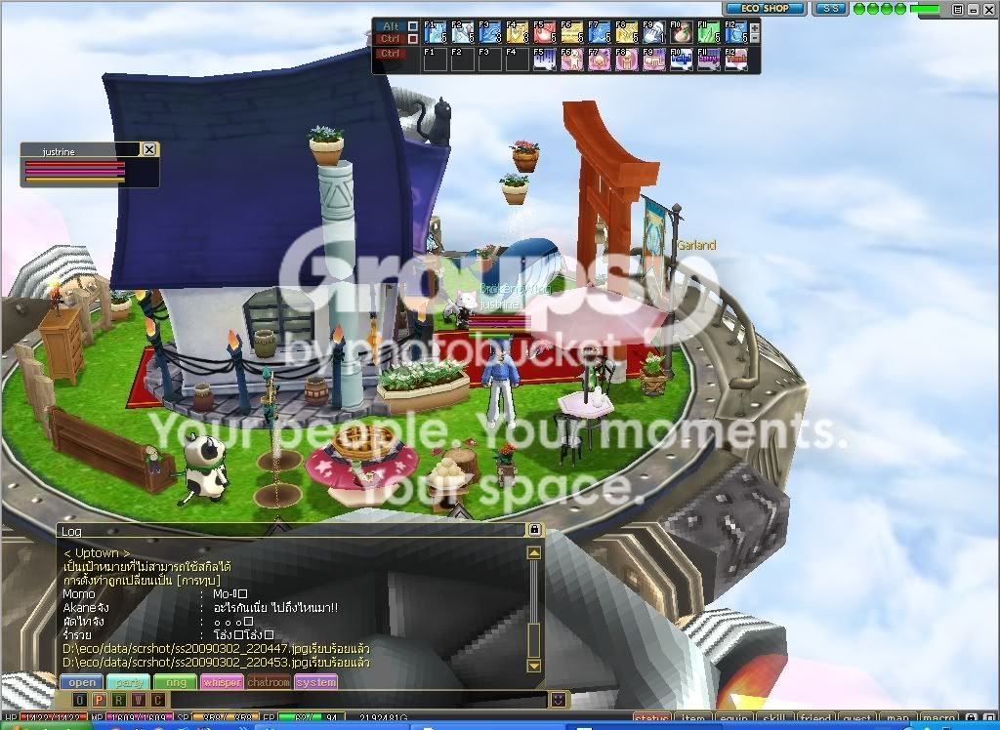
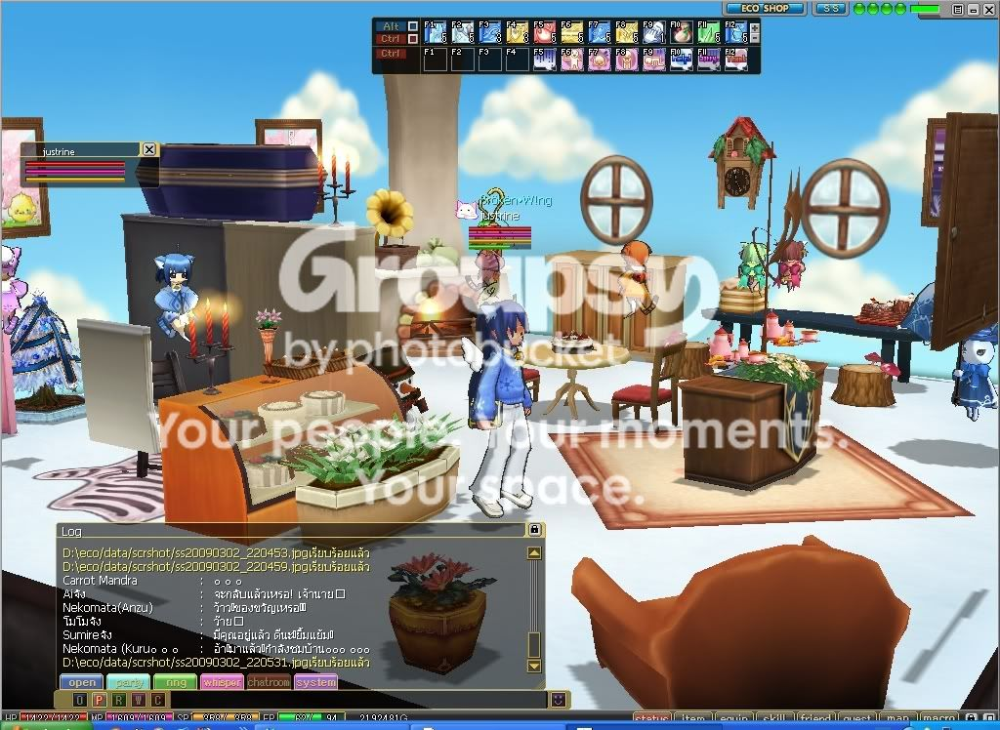
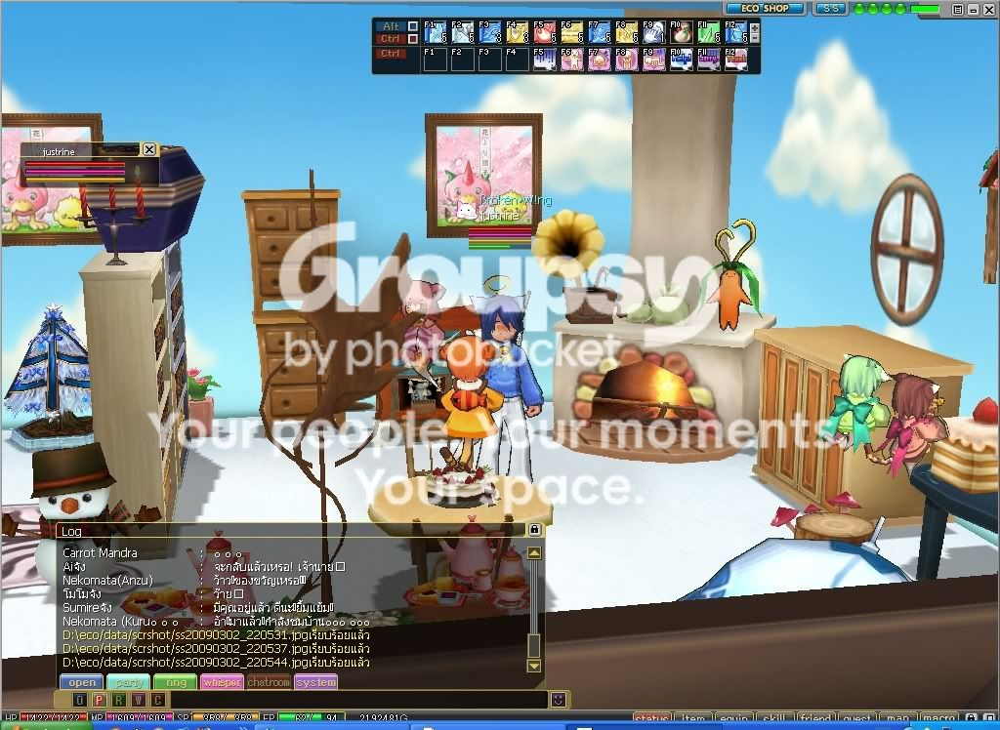

Zetia เขียน:คิดมากอีกคนและ =[]= ก็แค่ ... คิดอะไร อยากบอกอะไร ก็บอกมาเตอะ !! โฮกกกกก !!!
งั้นแฉ เจ็ ก็ได้สินะ หึหึ

พรุ่งนี้ ก็วาเลนไทน์ แล้ว เจ็เตรียมจะให้อะไรกับคนที่รักแล้วหรือยัง
 โดย ECO » ศุกร์ 13 ก.พ. 2009 9:47 pm
โดย ECO » ศุกร์ 13 ก.พ. 2009 9:47 pm
 โดย ECO » ศุกร์ 13 ก.พ. 2009 9:58 pm
โดย ECO » ศุกร์ 13 ก.พ. 2009 9:58 pm

Zetia เขียน:
` แบบฟอร์มสมัครตัวละคร `
=================================================
ชื่อ & สกุล : [ สองแบบเท่านั้น แฟนตาซียุโรป & ญี่ปุ่น * ห้ามเอาชื่อตัวละครในการ์ตูนหรือนิยายอื่นมาเด็ดขาด !! ]
Just rine (จัสท์ ไรน์)
ชื่อเรียก : [ ชื่อเล่นนั่นแล ]
Just หรือ justy
เผ่าพันธุ์ : [ Titania , Dominion , Emil & Half ( บอกด้วยลูกครึ่งอะไร ? ) ]
Titania
อาชีพ : [ ตามในเกมส์เลยนะ =w=; ]
Elementeler
อายุ : [ Titania > 100 ปี ]
116
เพศ : [ ชาย , หญิง , กระเทย , ทอม บลา ๆ =[]= !! เอามาเถอะ ! ]
ชาย
ลักษณะภายนอก : [ ความสูง & น้ำหนัก , สีผม , สีตา , ทรงผม ลักษณะทางกายภาพทั้งหลาย ]
สูง 159 (เตี้ยจัด==)
หนัก 45
สีผม น้ำเงิน
สีตา น้ำเงิน
ทรงผม Dominion Hair Catalog
(ผมตามซิกและอวาต้าเลยครับ ซิกคนกลางนะครับ)
ลักษณะการแต่งกาย : [ ขอละเอียดยิบ ๆ !! ไม่จำเป็นต้องเหมือนในเกมส์ ! แต่อย่าซ้ำการ์ตูนก็พอ !! * มีรูปก็ได้ แต่ห้ามเอารูปในการ์ตูนเรื่องอื่นมาโพส ! แต่ถ้าดัดแปลงมาหน่อยก็โอ ! ]
เสื้อยืดสีขาวทับเสื้อโค้ต,เชิต,คลุมสีน้ำเงิน(อะไรก็ได้ เพราะมันคล้ายกัน==) กางเกงขายาวสีขาว และรองเท้าผ้าใบสีเดียว ใส่แว่นกรอบสี่เหลี่ยมตามซิก ใส่บ้าง ไม่ใส่บ้าง เนื่องจากสายตาสั้นเล็กน้อย== มักจะใส่ตอนมองอะไรที่มันสำคัญๆ อย่างเช่นพวกประกาศที่มีคนมามุง
ลักษณะนิสัย : [ * สำคัญที่สุด !! ... เจ๊สับเละ !! ]
จะเป็นคนเงียบๆ หากยังไม่อยู่รู้จัก หากรู้จักแล้วจะเม้าท์แตกเลย เป็นคนโกรธยาก หายยากโกรธใครจะอาฆาตไปเป็นเวลานาน ห้ามให้คนที่โดนโกรธอยู่ใกล้ๆและ เวลาโกรธจะลงบอมหมดไม่ว่ามิตรหรือศัตรูเป็นเวลายาวนานตราบเท่าที่คนทำให้โกรธจะหายหน้าไปจากตนเองเป็นเวลานาน ชอบลืมเรื่องที่มีสาระ เรื่องไร้สาระไม่ลืม(แปลกคน==)
เวลาสู้จะชอบเล่น และทำสบายๆไม่เครียด แต่ท่าเอาจริงขึ้นมาจะอันตรายมากสำหรับคู่ต่อสู้ และผู้ที่อยู่ใกล้ เนื่องจากจะเล่นเวทโหดๆ แรงๆ
สิ่งที่ชอบ : [ ว่ามาเถอะ ]
หนังสือ(ไม่ใช้วิชาการล่ะกัน) การไม่ถูกบังคับ ขนมหวาน สีน้ำงิน,ขาว
สิ่งที่ไม่ชอบ : [ ว่ามาเช่นกัน !! ]
เรื่องสยองขวัญ แมงมุม ตะขาบ== กิ่งกือ
อาวุธ : [ จะให้มันมีเอกลักษณ์ยังไงก็ได้ แต่ขอให้อยู่ในขอบเขต ! อย่าให้มันเว่อมากก็พอ ! โอเค๊ ? ]
ถุงมือสีขาวที่มีพลังเวทบันจุอยู่
ความสามารถพิเศษ ( Versus ) : [ เรียกอีกอย่างว่า `Skill` หมายความว่าเป็นทักษะพิเศษที่นอกเหนือจากอาชีพของตน ! ใส่มาเท่าที่อยากจะใส่ ]
เวลาใช้เวทจะใช้พลังมากกว่าชาวบ้านสองเท่าแน่นอนแรกกว่า 1.5 เท่า ==
Flame blizard strom(พายุเปลวไฟและน้ำแข็ง)
Elemental blast(บลาสรวมธาตุ)
Elemental strom(สตรอมรวมธาตุ แรงน้อยกว่ารุ้ง)
Golden last elemental ลูกบอลสีทองที่บรรจุพลังธาตุทุกธาตุเอาไว้ จะใช้ตอนโกรธจัด
ความสามารถพิเศษ ( Other ) : [ ความสามารถพิเศษที่ไม่เกี่ยวกับการต่อสู้ อาทิเช่น กินจุ อะไรประมาณนั้น =w=/ ]
สามารถควบคุมปีกได้ว่าจะให้หายไปหรือว่าจะโผล่มาตอนไหน(ไม่เคยโผล่เลย)
พอทำอาหารเป็นนิดๆหน่อย(คนกินไปแล้วจะติดใจ)
กินได้เรื่อยมากกว่าคนปกติ 2เท่า ไม่อ้วน เป็นคนโชคดีอย่างมากช่วงหนึ่ง แล้วจะหายไปซักพักแล้วจะกลับมาอีก==
L=luck u = unluck
แบบว่า L L L U L L L U ประมาณนี้ครับ
ประวัติตัวละคร : [ * ไม่บังคับใส่ ]
เดินทางลงมายังอโครเนียนได้ประมาณ 3 ปี ก็เดินทางเกือบรอบโลกแล้ว แต่ก็ยังไม่สนิทกับใครเลยมักจะเงียบและยิ้มให้ มักถูกคิดว่าเป็นอีมิลอยู่เป็นประจำ แต่ก็ไม่ได้ถืออะไร==
ตั้งแต่ลงมาสามรถเป็นเอเลเมนท์เทเลอร์ได้ภายในหนึ่งปี และยังติดอันดับ 1 ในสิบ ของ สายวิซาร์ดและชาแมนที่เพิ่งวัดได้ในปีนี้(ปีของเรื่อง) ประวัติที่เหลือยังคงเป็นปริศนา ที่ไม่มีใครเคยทราบ ทุกคนรู้จักในนามเอเลเมนท์เทเลอร์ที่ได้รับเชิญเป็นสี่จัตุรเทพสายเวท แต่เจ้าตัวปฏิเสธ เนื่องจากอยากอยู่อย่างสบาย ไม่วุ่นวาย มักจะเดินทางไปที่ต่างๆด้วยสวนลอยฟ้าของตนเอง แล้วเปิดคาเฟ่ ไปตามที่ต่างๆเรื่อยๆ ไม่ค่อยมีใครได้เห็น จัสท์เอาจริงในการต่อสู้ เพราะคนที่เห็นมักจะบาดเจ็บสาหัต ไม่ก็ปางตาย และพูดเป็นเสียงเดียวกันว่า 'ปีศาจ หรืออีกนัยหนึ่ง darkness elementaler' และพื้นที่แถบนั้นจะเสียหายเป็นวงกว้าง ปัจจุบันเปิดคาเฟ่อยู่ที่ชานเมืองหลวงฝั่งตะวันออก
ETC : [ อยากเพิ่มเติมอะไรเชิญเลย ]
(มีเชื้อโอตาคุนิดหน่อย)
มีธุระกิจเสริมคือเปิดคาเฟ่เล็กๆบนสวนลอยฟ้าของตัวเอง ตามที่ต่างๆเท่าที่สวนจะไปได้ และรับทำขนมแลอาหารสำหรับงานต่างๆ ของขึ้นชื่อของคาเฟ่คือ เค้กช๊อกโกแลต ที่มียอดสั่งจากร้านต่างๆทั่วอโครโพลิส ซึ่งผลิตวันละ 50 ชิ้น นอกจากนี้ราคายังย่อมเยา จึงมีลูกค้าแน่นร้านทุกวัน แต่หากมีงานเข้ามาเจ้าตัวจะดูว่างานนั้นเหมาะสม ง่าย ยาก ขนาดใหญ่จะรับ ส่วนใหญ่จะรับงานยาก นอกจากพวกระดับสูง(มาก)ในสายเวทร้องขอมา เจ้าตัวจึงจะยอมทำ
ขอเพิ่มเข้าไปหน่อยละกัน==
อยากจะบอกอะไรคนแต่งมิ ? : [ * บังคับบอก ฮา ]
รูปแบบร้านครับ เพื่อนึกไม่ออก สามารถเพิ่มจำนวนโต๊ะได้นะครับ เนื่องจากผมทุนน้อย + ของเต็ม หรือเจ๊เทียร์จะครีเอทร้านใหม่เลยก็ได้ครับ


ช่วยแต่งออกมาให้ดีๆหน่อยนะครับ (เอาให้รั่วเลยก็ได้ครับ)
=================================================

 โดย ECO » ศุกร์ 13 ก.พ. 2009 11:29 pm
โดย ECO » ศุกร์ 13 ก.พ. 2009 11:29 pm
ชื่อ & สกุล : Niwre Lemmor (นิฟรี เลมเมอร์)
ชื่อเรียก : เพื่อนสนิทเรียก นิฟจัง แต่คนในกองทัพจะเรียกว่า จอมพลนิฟรี / ท่านแม่ทัพ ส่วนศัตรู จะรู้จักในฉายา จิ้งจอกสีเงิน (The Silver Fox)
เผ่าพันธุ์ : Dominion แต่ตอนนี้เป็นจอมพลของฝ่าย DEM
อาชีพ : Sage
อายุ : 236 ปี
เพศ : หญิง
ลักษณะภายนอก : สูงราวๆ 150 ซม. ผมสีขาวที่ยาวถึงกลางหลังถูกรวบที่ต้นคอและที่ปลายผมด้วยโบว์สีดำ ตาสีเงิน แต่ตาซ้ายเป็นตากลจักรที่ชนเผ่า DEM ปลูกถ่ายให้ ทำให้ตาข้างนี้มีสีแดง และมีจักรกลช่วยในการมองเห็นปรากฏออกมาเป็นเครื่องจักรอย่างเห็นได้ชัด ใบหน้าดูเป็นคุณแม่ใจดีธรรมดา หน้าอกแทบจะไม่มีเลย จนคนมักจะนึกว่าเป็นผู้ชายเมื่อแรกพบ แขนขวาทั้งแขนเป็นแขนจักรกลสีเงินที่พวก DEM ปลูกถ่ายให้เช่นกัน (แขนขาด ตาบอดได้อย่างไรเดี๋ยวพูดทีหลัง) ปีกเหลือแต่โครงกระดูก(แต่ยังบินได้อยู่) หางสีดำยังปกติสุขดี น้ำหนัก 50 กิโลฯ (แขนกลปาไป 20 กิโลฯ)
ลักษณะการแต่งกาย : สวมชุดแบบ Sage ชายธรรมดาทั่วไป แขนเสื้อขวาขาดจนถึงต้นแขน สวมผ้าพันคอสีเงินและมีกล้องส่องทางไกลคล้องคอตลอดเวลา ที่คาดผมบนศีรษะของเธอคือแว่นกันก๊าซพิษรูปร่าง คล้ายๆ แว่นดำน้ำ อักขระของพวก Sage ที่อยู่บนชุดถูกลบเลือนไปจนหมด บ่าขวาของเธอมีเกราะสีเงินประดับผ้าลายพรางแบบทหารยาวถึงเอว ซ่อนเข็มกลัดรูปเครื่องหมายอินทรีเหล็กมีเฟืองและดาวหกแฉกเป็นพื้นหลัง อันเป็นสัญลักษณ์ของจอมพลฝ่าย DEM ที่กลัดไว้ตรงอกเสื้อเอาไว้ สายยึดเกราะนั้นพาดมาที่เอวซ้าย ซึ่งใช้เป็นที่แขวนกระติกน้ำ และวิทยุรับส่งสำหรับสื่อสาร และของจิปาถะอื่นๆ อ้อ ใช่ ลืมไป แขนกลนั้นโดยปกติจะสวมถุงมือสีขาวยาวถึงต้นแขนเพื่อปกปิดไว้ด้วย
ลักษณะนิสัย : เหมือนคุณแม่ใจดี มีเมตตา ดูแลเอาใจใส่กับผู้ใต้บังคับบัญชา และคนธรรมดาทั่วๆ ไป แต่แฝงด้วยความเด็ดขาดในการปกครอง(กรณีกับลูกน้อง) ไม่เคยทอดทิ้งผู้ใต้บังคับบัญชาหรือมิตรสหายเพื่อเอาตัวรอด บางครั้งถึงขั้นพาตัวเธอเข้าไปเสี่ยงอันตรายเสียเองก็มีอยู่บ่อยๆ อารมณ์เยือกเย็น ยิ้มง่าย ไม่มีอาการน๊อตหลุดไม่ว่าจะเจอกับสถานการณ์ไหน ความคิดฉลาดหลักแหลมสุขุมรอบคอบ เล่ห์เหลี่ยมแพรวพราวตัดสินใจเฉียบขาด สมกับฉายาจิ้งจอกสีเงิน แต่ไม่เคยประมาทและหลงตัวเอง เพราะรู้ดีว่า “คำว่าสำเร็จแน่นอน 100% บนโลกนี้ เป็นแค่เรื่องเพ้อฝัน” หากเป็นการรบ/ต่อสู้ ขอให้มั่นใจได้เลยว่า เธอคนนี้จะอยู่แนวหน้าสุดนำทหารลุยและจะถอยกลับเป็นคนสุดท้ายแน่นอน (หากไม่ใช่ แปลว่าเธอกำลังจะเล่นลูกไม้บางอย่างกับท่านแล้ว ระวังไว้!)
ส่วน Asura ที่สิงอยู่ในแขนกลนั้น นิสัยเป็นอย่างไร ไม่มีใครรู้ เพราะคนที่เขาพูดด้วย มีแต่ผู้บังคับบัญชาระดับสูง กับตัวนิฟรีเท่านั้น และก็ยังพูดน้อยมีแต่เนื้อไม่มีน้ำอีกด้วย
สิ่งที่ชอบ : ทุกอย่างเป็นไปตามแผนที่วางไว้ ระเบียบวินัยอันเคร่งครัด วันสงบๆ ไร้ศึกสงครามและการวิวาท การสนทนาที่เป็นสาระ
สิ่งที่ไม่ชอบ : การสูญเสียชีวิตของผู้ใต้บังคับบัญชาในการรบ พวกหน่วยเหนือที่ไม่ได้เรื่องไม่เคยเข้าใจคนในสนามรบ หรือออกคำสั่งงี่เง่าที่จะนำไปสู่สิ่งที่ไม่ชอบอย่างแรก ผู้ใต้บังคับบัญชาที่ทำผิดกฎระเบียบ หรือแผนที่วางไว้เกิดล้มเหลวโดยปัจจัยไม่คาดฝัน อันเสี่ยงที่จะนำไปสู่สิ่งที่ไม่ชอบข้อแรก (อีกแล้ว)
อาวุธ : แขนขวาทั้งแขนที่เป็นแขนจักรกลที่พวก DEM ปลูกถ่ายให้แทนที่แขนเดิมที่ขาดไป แม้จะมีอายุกว่า 200 ปีแล้ว แต่มันก็ยังอยู่ในสภาพดีเพราะเธอดูแลปรับปรุงมันตลอดเวลา สามารถต่อยทะลุเกราะของหุ่นยนต์รบรุ่นล่าสุด แข็งแกร่งที่สุดของฝ่าย Acronia ในยุคปัจจุบันได้อย่างไม่มีปัญหา และใช้แทนโล่ห์ได้ด้วย นอกจากนี้ ลำแขนของมัน ยังติดตั้งเครื่องควบแน่นพลังเวทย์ ไว้ใช้ยิงเวทย์พื้นฐาน (เช่น Energy Spear)ได้โดยไม่ต้องเสียเวลาร่าย เหมือนกับปืนพกประจำตัวที่กระสุนไม่เคยหมด (แต่เวทย์ใหญ่ๆ ก็ต้องร่ายอยู่ดี) ไม่เพียงเท่านั้น แขนนั้นยังบรรจุวิญญาณของสหายเก่าของเธอสมัยอยู่กองทัพ Acronia ไว้ด้วย ทำให้เพื่อนของเธอคนนี้ยังอยู่เคียงข้างกับเธอมาตลอด และคอยพูดคุยสนทนา และให้คำแนะนำตักเตือนเธอเป็นบางครั้ง เธอจึงเรียกแขนกลตามชื่อเพื่อนคนนั้นของเธอว่า Asura (เป็นอีกหนึ่งเหตุผลที่เธอดูแลมันอย่างดี)
ความสามารถพิเศษ ( Versus ) :
-Martial Art: แน่นอน มีหมัดกลแบบนั้นทั้งที หากไม่เป็นกังฟู ต่อสู้ประชิดตัวเอาเสียเลย ก็ไม่ได้ใช้ประโยชน์จากมันเต็มที่น่ะสิ ของนิฟรีนั้นจะเน้นที่การหลบหลีกการโจมตีแล้วจู่โจมเข้าใส่จุดที่ศัตรูไม่คาดฝันโดยอาศัยความเร็วสูงและหมัดที่หนักมากๆ เป็นหลัก (แหงสิ ก็หมัดกลนี่)
-Area Scan: ตาจักรกลของนิฟรีมีความสามารถเป็นเรดาห์ในตัว สามารถตรวจจับสนามพลังที่ศัตรูสร้างขึ้น การใช้เวทย์มนตร์ หรือการเคลื่อนไหวของสิ่งต่างๆ ได้ในรัศมี 3 กิโลเมตร แต่เวลาไม่ได้บัญชาการรบเธอจะจำกัดขอบเขตของมันไว้ที่ 500 เมตรเท่านั้น เพราะเปลืองพลัง และทำให้ปวดหัวที่ต้องมานั่งแยกแยะคลื่นพลังจากการดวล การบู๊กับสัตว์ประหลาดของคนทั่วไป
-Stasis Field: สร้างสนามพลังขนาดใหญ่ที่จะหยุดการเคลื่อนที่ของทุกสิ่งทุกอย่างในบริเวณไว้ แม้จะเคลื่อนไหวไม่ได้ แต่ว่าก็ไม่มีใครนอกสนามพลังจะทำอะไรคนที่ถูกกักอยู่ในนั้นได้เช่นกัน เธอมักใช้เวทย์นี้เพื่อถ่วงเวลากองทัพศัตรู จนกองกำลังของเธอเข้าประจำตำแหน่งพร้อมรบบ่อยๆ
Sonic Overdrive: เปลี่ยนพลังเวทย์ทั้งหมดมาใช้ในการเคลื่อนไหวด้วยความเร็วเหนือเสียง และการโจมตีประชิดที่แม่นยำระดับสามารถเลือกจิ้มผึ้ง 1 ตัวจากผึ้งทั้งฝูงลงมาตายได้โดยที่พวกที่เหลือไม่เป็นอันตราย ในระหว่างนี้นิฟรีจะไม่สามารถใช้เวทย์มนตร์ได้เลย และเนื่องจากเทคนิกนี้จะฝืนขีดจำกัดของร่างกาย(ส่วนที่ไม่ใช่เครื่องจักร) อย่างมาก ทำให้การถูกโจมตีจังๆ เพียงครั้งเดียว (ไม่ว่าจะด้วยอะไรก็ตาม) ก็สามารถน๊อกเอาท์เธอได้ทันที นอกจากนี้ หากใช้ติดต่อกันนานมากๆ ยังทำให้เธอต้องนอนซมไปเป็นวันๆ เลยด้วย
ความสามารถพิเศษ ( Other ) :
-แพ้น้ำเมาทุกชนิดขั้นรุนแรง การจิบแค่อึกเดียวก็ทำให้ถึงกับซมไปสามวันได้เลยทีเดียว
-คาดเดาลักษณะนิสัยของคนที่พูดด้วยได้แม่นยำโดยการคุยด้วยแค่ประโยคเดียว!!
-กินจุขนาดสามคนกินโดยไม่อ้วน แต่ก็มีเหตุผลเพราะอาหารส่วนเกินนั้นไปเีป็นพลังงานให้กับ Asura ที่สิงอยู่ในแขนกลของเธอเองนั่นแหละ
-คุยกับเครื่องจักรได้ แม้จะดูเหมือนบ้า แต่เครื่องจักรเหล่าที่รับฟัง และทำตามสิ่งที่เธอพูดนั้นก็เป็นหลักฐานอย่างดีว่า เครื่องจักรทุกชนิดบนโลก มีวิญญาณของตัวมันเองอยู่
ประวัติตัวละคร : Niwre Lemmor เดิมทีเป็นเพียง Dominion ธรรมดาๆ ที่มีความฝันอยากจะเป็นจอมเวทย์ เมื่ออายุ 12 ก็สามารถสอบเข้าสมาคมจอมเวทย์ (Wizard) ได้คะแนนสูงสุด ด้วยความที่เป็นคนหัวไว ทำให้เรียนจบศาสตร์ทุกแขนงและพิชัยสงคราม (วิชาเลือก) ตั้งแต่อายุ 17 และได้รับบรรจุเข้าประจำการในกองกำลังป้องกันเมือง Morg ที่นั่น เธอได้พบกับเพื่อนสนิทคนหนึ่ง ที่เป็นมนุษย์อายุคราวเดียวกัน ชื่อว่า Asura ทั้งสองเป็นสหายที่สนิทสนมกันมาก ถึงกับสัญญาว่าจะเป็นเพื่อนกันตลอดไป ทุกอย่างดูจะเงียบ และสงบสุขสำหรับเธอ แต่ว่าเหตุการณ์ที่ทำให้เธอเปลี่ยนไปก็เกิดขึ้น
พวกโจรสลัดจากโพ้นทะเลได้ทำการบุกโจมตีเมืองแห่งนี้อย่างหนักเมื่อตอนเธออายุได้ 20 Tamaid ผู้บังคับบัญชากองกำลัง Morg ในสมัยนั้น และเป็นปู่ทวดของ Diamat เศรษฐีแห่งเมือง Morg ในปัจจุบัน (ไอ้คนขูดตังค่าไปหอแสงนั่นไง) ไม่อาจต่อต้านพวกมันไว้ได้ จนทำให้เมืองถูกปิดล้อม กองกำลังประจำเมืองเสียขวัญอย่างหนัก กำลังหนุนก็ยังมาไม่ถึง เขาจึงคิดแผนออกคำสั่งจับตัวนิฟรีมายัดข้อหาว่าเป็นไส้ศึก ด้วยว่าหมั่นไส้ตั้งแต่ตอนเธอมาเสนอหน้าเตือนเรื่องเมืองอาจโดนโจมตีเมื่อหลายเดือนก่อนด้วยความหวังดี แล้วสั่งตัดสินประหารด้วยความคิดตื้นๆ ว่า จะเป็นการเรียกขวัญกำลังใจทหารคืนมา แต่กลายเป็นว่า Asura โผล่มาขวางการประหารไว้ ทำให้เกิดการตะลุมบอนขึ้น
ผลที่สุด Tamaid ก็ฟาดดาบตัดแขนขวาขาดและยิงปืนพกไปโดนดวงตาข้างซ้ายของนิฟรีเข้าอย่างจังจนเธอตกหน้าผาข้างเมืองไป ส่วน Asura ก็โดนซ้อมปางตายก่อนจะโยนลงหน้าผาตามไปเช่นกัน แต่ว่าหน่วยลาดตระเวนของฝ่าย DEM ได้ผ่านมาพบเข้าและช่วยชีวิตทั้งสองไว้ แต่ Asura อาการหนักเกินกว่าจะรักษาได้ เขาจึงขอร้องให้ย้ายวิญญาณเขาใส่ไว้กับอวัยวะเทียมที่จะปลูกถ่ายให้กับนิฟรี เพื่อรักษาสัญญาที่ให้ไว้กับเธอ พวก DEM จึงจัดการทุกอย่างตามคำขอของเขา เมื่อนิฟรีได้สติคืนมา และรู้เรื่องราวทั้งหมด เธอเสียใจกับความเลวร้ายของมนุษย์ โดยเฉพาะพวกที่มีอำนาจในมือ และตั้งปณิธานว่า เมื่อตนเองมีอำนาจบ้าง จะไม่เป็นคนบ้าอำนาจหลงตนเองเช่นนั้นเป็นอันขาด
หลังจากวันนั้น นิฟรีกับ Asura ในแขนกลของเธอก็เข้าร่วมกับฝ่าย DEM เพื่อตอบแทนบุญคุณของพวกเขา เธอได้เลื่อนตำแหน่งในกองทัพ DEM อย่างรวดเร็ว ตัวเธอเป็นที่นับถือในหมู่ทหาร DEM ด้วยปกครองผู้ใต้บังคับบัญชาอย่างเฉียบขาด หากแต่แฝงด้วยความเมตตาดูแลเอาใจใส่อย่างดี และแล้ววันที่สร้างชื่อให้กับเธอมาถึงในอีก 15 ปีต่อมา....
ตอนนั้น พวก DEM ได้เปิดฉากทำสงครามกับชาว Acronia แต่ทว่า กองกำลังผสม 4 ทัพของ Acronia ในสมัยนั้นก็ตอบโต้อย่างดุเดือดจนเป็นศึกนองเลือด แนวรบทั้ง 3 ทิศ ตะวันออก ใต้ เหนือ ของฝ่าย DEM ถูกตรึงไว้หมด และกำลังจะถูกโต้กลับ ยกเว้นก็แต่แนวรบตะวันตกซึ่งชาว Acronia และเหล่า DEM มองข้ามไป เพราะไม่คิดว่าจะตีเมือง Morg แตกได้ ฝ่ายแรกมีกำลังป้องกันเข้มแข็งมาก จากเหตุการณ์โจรสลัดเมื่อ 15 ปีก่อน ฝ่ายหลังที่นำโดยนิฟรีนั้นมีกำลังน้อยมาก อาวุธหนักอย่างจักรกลสงครามก็มีจำกัด ด้วยว่าแผนตอนแรกจะให้เธอดึงความสนใจให้กำลังหลักยกเข้ายึดเมืองหลวงเท่านั้น
แต่ทว่า เมื่อสถานการณ์พลิกผัน เพื่อให้คนสูญเสียน้อยที่สุด นิฟรีจึงตัดสินใจบุกโจมตีเมือง Morg ด้วยเล่ห์เหลี่ยมในการบัญชาการรบของเธอประกอบกับคำแนะนำของ Asura ทำให้กองกำลังที่น้อยกว่าฝ่าย Morg ถึง 20 เท่าสามารถทะลวงเข้ายึดเมืองได้ เป็นการตัดการส่งเชื้อเพลิงป้อนกองทัพหลักอีก 3 ทิศที่เหลือทันที
และไม่เท่านั้น เธอยังเคลื่อนทัพอันน้อยนิดของเธอบุกโจมตีต่อเนื่องไม่หยุด ทั้งๆ ที่ฝ่าย Acronia อีกหลายทัพที่ถูกส่งมาขัดขวางเธอนั้นมีอาวุธที่ดีกว่า กำลังพลมากกว่าหลายเท่า ก็ไม่อาจต้านทานทัพของเธอได้ จนสามารถเข้าปิดล้อมเมือง Acropolis ได้ ภายใน 2 เดือน โดยเสียทหารไปเพียง 50 นายเท่านั้น ทำให้กองกำลังในแนวหน้าที่ยันกับ DEM อีก 3 ทิศที่เหลือระส่ำระสายอย่างหนัก จากผลงานนี้ทำให้นิฟรีถูกอวยยศเป็นจอมพล กองกำลังของเธอกลายเป็นที่หวาดกลัวของทหารทั้ง Acronia ทำให้ชื่อเสียงของเธอโด่งดังขึ้นมาทันทีในฐานะจอมพลที่อายุน้อยที่สุดเท่าที่ Acronia เคยรู้จัก (35 ปี) และได้ฉายา "จิ้งจอกสีเงิน" มาจากคู่สงครามอีกด้วย
ทุกอย่างดูเหมือนจะเป็นการดับความหวังของฝ่าย Acronia โดยสิ้นเชิง แต่ทว่า หน่วยเหนือของฝ่าย DEM ก็ได้ตัดสินใจถอนกำลังกลับอย่างไม่ทราบสาเหตุ โดยมีนิฟรี ซึ่งขณะนี้เป็นจอมพลแล้ว คุมการถอยทัพ ทำให้กองกำลังผสม Acronia ที่หวังอาศัยโอกาสตามไล่ตีระหว่างถอยต้องโดนกับดักล้มตายไปอีกหลายพัน หลังจากนั้น ทุกอย่างเกี่ยวกับจอมพลคนนี้ก็เงียบหายมา 200 ปี เหมือนๆ กับพวก DEM ที่ถอนกำลังหายไปอย่างลึกลับ จนเมื่อไม่นานนี้ ที่เธอคนนี้ กับ Asura คู่หู ก็ได้มาปรากฏตัวบนทวีปนี้อีกครั้งโดยไม่ได้นำกองทัพมาด้วย ส่วนสาเหตุที่มานั้นก็ไม่มีใครทราบได้ (แต่ไม่ใช่ถูกไล่ออกหรือถูกขับไล่ ยัดข้อหา ฯลฯ แน่นอน)
ETC : คนในยุคปัจจุบันไม่มีใครรู้เลยว่า เธอคนนี้เคยสร้างผลงานอะไรไว้ในอดีตบ้าง นักประวัติศาสตร์ถูกผู้มีอำนาจในสมัยนั้นกดดันให้บันทึกประวัติศาสตร์ในทำนองที่ว่า “พวก DEM พ่ายแพ้และถูกผลักดันจนตกทะเลไป” เพื่อปกปิดความไร้ประสิทธิภาพของตนในอดีตไม่ให้คนรุ่นหลังได้รับรู้ ทำให้เรื่องราวของเธอคนนี้เงียบหายไปตามกาลเวลา กลายเป็นแค่นิทานก่อนนอน แต่เหล่า Titania และ Dominion ที่เคยมีชีวิตในช่วงเวลานั้นและอายุยืนมาจนปัจจุบันจะรู้จักเธอและกองกำลังของเธอดี พวกเขาไม่เคยลืมฝันร้ายของ “กองกำลังจากขุมนรก” ที่ทำลายกองทัพทุกกองที่ขวางหน้าด้วยเล่ห์กลและการวางแผนอันเฉียบคมทั้งๆ ที่กำลังพลและยุทโธปกรณ์เสียเปรียบกว่าหลายเท่า ยกประชิดเมืองหลวงในเวลาแค่ 2 เดือนหลังเปิดฉากโจมตี นั้นได้ลงแม้แต่คนเดียว บางคนถึงกับยกย่องเธอให้เป็น “แม่ทัพที่เก่งที่สุด มีพรสวรรค์และน่ากลัวที่สุดเท่าที่โลก Acronia เคยเผชิญหน้ามา” เลยทีเดียว
อยากจะบอกอะไรคนแต่งมิ ? : บอกว่า งงตรงไหน ถามมาเลยครับ แล้วผมจะอธิบายเพิ่มเติมให้ หากที่อธิบายไปแล้วยังไม่เคลียร์พอครับผม
แล้วก็ อย่าพยายามหาความหมายของชื่อนี้เลยครับ ผมบอกตรงๆ
(แต่ก็ใช่ว่ามันจะไม่มีความหมาย แค่มีความหมายในทางที่เจ๊ และทุกๆ คนคาดไม่ถึงเท่านั้น หึๆๆๆ)
อ้อ ใช่ รูปไว้มีอารมณ์ศิลปินจะวาดให้แล้วกันนะครับ ตอนนี้ไปนอนก่อนละครับผม ราตรีสวัสดิ์
ย้อนกลับไปยัง Fan Art & Fiction
่กำลังดูบอร์ดนี้: ไม่มีสมาชิก และ บุคคลทั่วไป 1 ท่าน


 คิดชื่อไม่ออกง่ะ ส่วนใหญ่จะซ้ำหมดแล้ว จะผสมออกมาเองก็ก็ไม่มีความหมาย
คิดชื่อไม่ออกง่ะ ส่วนใหญ่จะซ้ำหมดแล้ว จะผสมออกมาเองก็ก็ไม่มีความหมาย